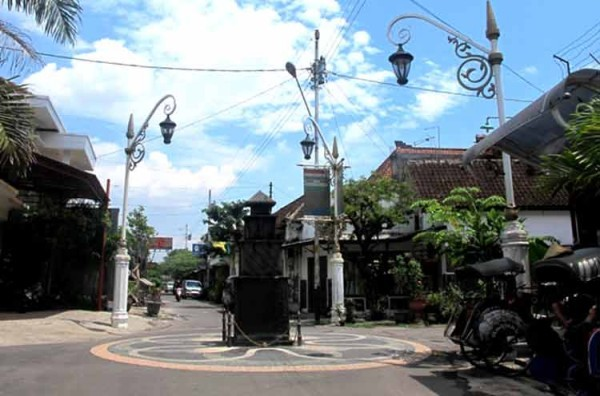

Inilah salah satu sentra batik di kota Solo. Dahulu kala, Kiai Ageng Henis (kakek Panembahan Senopati) adalah orang yang mengajari penduduk setempat bagaimana cara membatik. Konon menurut kisah, usia Kampung Laweyan jauh lebih tua daripada Keraton Kasunanan di mana daerah Laweyan di Solo ini sudah eksis dengan batiknya sejak Kerajaan Pajang berkuasa di Jawa Tengah pada pertengahan abad ke-16.
 Di Kampung Batik Laweyan, Anda akan mendapati kesan arsitektural Eropa di kampung Laweyan ini. Banyak rumah-rumah di Laweyan dibangun dengan sentuhan arsitektur Eropa yang megah dan kokoh. Dulu, rumah-rumah itu adalah kediaman para saudagar batik. Tetapi kini, kampung yang berdiri di atas lahan seluas 24 hektar tersebut terbagi ke dalam tiga blok besar.
Anda dapat puas berkeliling dari satu toko ke toko lainnya untuk mencari batik yang paling Anda sukai di tempat ini. Sungguh, Indonesia terkenal akan kerajinan batiknya, seperti yang dapat ditemukan di Jogja, Solo, Cirebon, Papua, dan masih banyak lagi dari berbagai daerah di Nusantara.
Alamat: Jl. Doktor Radjiman No. 521, Solo, Jawa Tengah